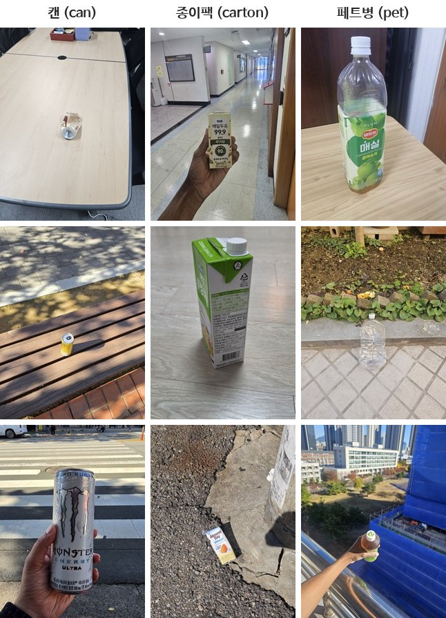

STUDENT_ID = "20240000" # 본인 학번으로 바꿉니다
NAME = "홍길동" # 본인 이름으로 바꿉니다과제 2: 내 사진으로 재활용품 분류기 만들기

과제 안내
실습 7에서는 개미·벌 사진 244장으로 사전학습 모델의 분류부를 학습시켰습니다. 이번에는 사진을 직접 찍어서 재활용품 세 종류를 가르는 분류기를 만듭니다.
| 클래스 | 폴더 이름 | 예 |
|---|---|---|
| 캔 | can |
음료 캔, 통조림 캔 |
| 종이팩 | carton |
우유팩, 두유·주스 종이팩 |
| 페트병 | pet |
생수병, 음료 페트병 |
채점은 교수가 따로 찍어 둔 비공개 테스트 사진 97장으로 합니다. 사진은 공개하지 않지만, 8절에서 내 가중치 파일의 최종 테스트 정확도와 클래스별 정확도를 미리 확인할 수 있습니다(하루 다섯 번). 테스트 사진은 실내와 실외의 여러 장소에서 찍었고, 손에 든 것, 바닥이나 탁자에 놓은 것, 멀리서 찍어 작게 나온 것, 위에서 내려다본 것, 찌그러진 것, 라벨을 뗀 것이 섞여 있습니다. 같은 클래스 안에서도 상표와 모양이 여러 가지입니다. 그러므로 내 사진도 여러 물건을 여러 조건에서 찍어야 테스트 사진을 맞힐 수 있습니다. 모델과 전처리는 모두 같으므로, 점수는 사진을 어떻게 모았는지와 어떻게 학습시켰는지에서 갈립니다.
테스트 사진에는 한 장에 물건이 하나만 나옵니다. 유리병, 종이컵, 플라스틱 용기, 음료 파우치는 나오지 않습니다.
다음은 테스트 사진과 같은 조건에서 찍은 예시 사진입니다.

대응 실습: 실습 7 사전학습 모델로 사진 판별하기. 실습 7의 코드를 옆에 열어 두고 진행합니다.
Colab 설정: 메뉴 런타임 → 런타임 유형 변경 → T4 GPU를 고른 뒤 시작합니다.
사진 찍기와 올리기
- 휴대폰으로 클래스마다 사진을 찍습니다. 장수 제한은 없습니다. 쓰레기를 뒤질 필요는 없습니다. 냉장고나 편의점에 있는 음료 캔, 페트병, 우유팩을 찍어도 되고, 마신 뒤 헹군 것을 찌그러뜨리거나 라벨을 떼어 찍어도 됩니다.
- 구글 드라이브의
내 드라이브에hw02폴더를 만들고, 그 안에can,carton,pet폴더를 만들어 사진을 넣습니다. 폴더 이름은 영어 그대로 씁니다. - 직접 찍은 사진만 씁니다. 인터넷에서 내려받은 사진이나 다른 학생의 사진은 쓰지 않습니다. 채점할 때 사진의 촬영 정보와 학생 사이의 같은 사진을 확인합니다.
내 드라이브/hw02/
can/ 캔 사진
carton/ 종이팩 사진
pet/ 페트병 사진제출 규칙
- 아래 첫 셀의
STUDENT_ID와NAME을 본인 것으로 바꿉니다. ____를 모두 채운 뒤 런타임 다시 시작 후 전체 실행으로 위에서부터 끝까지 오류 없이 실행합니다.- 변수 이름과 함수 이름은 바꾸지 않습니다.
- 마지막 “제출 전 확인” 셀이
통과를 출력하는지 확인합니다. - 아래 파일 세 개를 제출합니다. 앞의 두 개는 7절의 셀이 만들어 내려받게 해 줍니다.
| 파일 | 내용 |
|---|---|
hw02_학번.pt |
학습한 분류부의 가중치 |
hw02_학번_photos.zip |
학습에 쓴 사진 (크기를 줄인 것) |
hw02_학번.ipynb |
출력이 포함된 노트북 (파일 → 다운로드 → .ipynb) |
- 개인 과제이므로 다른 학생의 가중치 파일이나 사진을 받아서 내지 않습니다. 가중치는 내가 찍은 사진으로만 학습하고, 가중치 숫자를 직접 고치지 않습니다. 채점할 때 학생끼리 가중치를 비교하고, 제출한 가중치가 제출한 사진으로 학습한 것인지 확인합니다.
채점 (100점)
| 항목 | 배점 |
|---|---|
| 비공개 테스트 사진의 정확도 | 70 |
| 가중치 파일이 정해진 모델에 그대로 들어가는가 | 10 |
| 사진 zip에 세 클래스의 사진이 모두 있는가 | 10 |
| 노트북의 빈칸을 모두 채우고 끝까지 실행했는가 | 10 |
정확도 점수는 다음과 같습니다.
| 테스트 정확도 | 80% 이상 | 70% 이상 | 60% 이상 | 50% 이상 | 40% 이상 | 40% 미만 |
|---|---|---|---|---|---|---|
| 점수 | 70 | 60 | 50 | 40 | 30 | 20 |
1. 준비 — 제공 코드
# ▶ 그대로 실행하세요 — 준비
import torch
device = torch.device('cuda' if torch.cuda.is_available() else 'cpu')
torch.manual_seed(42)
print(device)Colab에서 GPU 런타임이면 cuda가 나옵니다.
2. 사진 가져오기 — 제공 코드
휴대폰 사진은 크기가 커서 그대로 학습하면 느리고, 아이폰 사진(HEIC)은 바로 열리지 않습니다. 그래서 드라이브의 사진을 짧은 변 256으로 줄여 Colab 안으로 복사합니다. 이때 클래스마다 사진의 5분의 1을 검증용으로 따로 떼어 둡니다.
# ▶ 그대로 실행하세요 — 구글 드라이브 연결
from google.colab import drive
drive.mount('/content/drive')
PHOTO_DIR = '/content/drive/MyDrive/hw02'# ▶ 그대로 실행하세요 — 사진을 줄여서 훈련용과 검증용으로 나누기
import os, csv, random, unicodedata
from PIL import Image, ImageOps
from pillow_heif import register_heif_opener
register_heif_opener() # 아이폰 사진(HEIC)도 열 수 있게 한다
CLASSES = ['can', 'carton', 'pet']
DATA = './hw02_data'
random.seed(42)
rows = []
for c in CLASSES:
src = os.path.join(PHOTO_DIR, c)
assert os.path.isdir(src), f'{src} 폴더가 없습니다. 드라이브의 폴더 이름을 확인하세요.'
names = sorted(n for n in os.listdir(src) if not n.startswith('.'))
assert len(names) >= 5, f'{c} 폴더에 사진이 5장 이상 있어야 합니다.'
random.shuffle(names)
n_val = len(names) // 5 # 클래스마다 5분의 1은 검증용
for split in ['train', 'val']:
os.makedirs(os.path.join(DATA, split, c), exist_ok=True)
for k, name in enumerate(names):
try:
img = Image.open(os.path.join(src, name))
except Exception:
print('사진이 아니라서 건너뜁니다:', c, name)
continue
exif = img.getexif() # 촬영 정보 (271은 제조사, 272는 기종)
img = ImageOps.exif_transpose(img).convert('RGB') # 찍은 방향대로 세우고 RGB 세 채널로 맞춘다
w, h = img.size
scale = 256 / min(w, h) # 짧은 변이 256이 되도록 줄인다
img = img.resize((round(w * scale), round(h * scale)))
split = 'val' if k < n_val else 'train'
file = f'{c}_{k:04d}.jpg'
img.save(os.path.join(DATA, split, c, file), quality=90)
rows.append([split, c, file, unicodedata.normalize('NFC', name),
str(exif.get(271, '')), str(exif.get(272, ''))])
# 어떤 원본 사진을 어디에 넣었는지 기록해 둔다 (사진 zip에 함께 들어간다)
with open(os.path.join(DATA, 'manifest.csv'), 'w', newline='') as f:
csv.writer(f).writerows([['split', 'class', 'file', 'original', 'maker', 'model']] + rows)
for split in ['train', 'val']:
print(split, {c: len(os.listdir(os.path.join(DATA, split, c))) for c in CLASSES})클래스마다 훈련용과 검증용 사진 수가 나옵니다.
# ▶ 그대로 실행하세요 — 클래스마다 훈련 사진 여섯 장 보기
import matplotlib.pyplot as plt
fig, axes = plt.subplots(3, 6, figsize=(12, 6))
for row, c in zip(axes, CLASSES):
files = sorted(os.listdir(os.path.join(DATA, 'train', c)))[:6]
for ax, file in zip(row, files):
ax.imshow(Image.open(os.path.join(DATA, 'train', c, file)))
ax.set_title(c)
for ax in row:
ax.axis('off')
plt.show()3. 전처리와 데이터 로더
채점기는 아래 tf로 테스트 사진을 전처리합니다. 그러므로 검증 사진에도 같은 전처리를 써야 합니다. 이 셀은 바꾸지 않습니다.
# ▶ 그대로 실행하세요 — 채점기와 같은 전처리 (바꾸지 않습니다)
from torchvision import transforms
mean = (0.485, 0.456, 0.406) # ImageNet 사진의 채널별(R, G, B) 평균
std = (0.229, 0.224, 0.225) # ImageNet 사진의 채널별(R, G, B) 표준편차
tf = transforms.Compose([
transforms.Resize(256),
transforms.CenterCrop(224),
transforms.ToTensor(),
transforms.Normalize(mean, std),
])3.1 훈련용 전처리 — 채워 넣기 ①
훈련 사진에는 증강을 넣습니다. 어떤 증강을 얼마나 넣을지는 직접 정합니다. 테스트 사진이 어떤 조건에서 찍혔는지 생각해서 고릅니다. 크기는 tf와 같이 224×224로 맞추고, 맨 끝은 ToTensor()와 Normalize(mean, std)로 끝냅니다.
tf_train = transforms.Compose([
____
])3.2 데이터셋과 로더 — 채워 넣기 ②
훈련 사진에는 tf_train을, 검증 사진에는 tf를 씁니다. 훈련 로더는 에폭마다 순서를 섞습니다.
from torchvision import datasets
from torch.utils.data import DataLoader
train_ds = datasets.ImageFolder(DATA + '/train', transform=____)
val_ds = datasets.ImageFolder(DATA + '/val', transform=____)
train_loader = DataLoader(train_ds, batch_size=32, shuffle=____)
val_loader = DataLoader(val_ds, batch_size=64)
print(train_ds.classes, len(train_ds), len(val_ds))['can', 'carton', 'pet']과 훈련·검증 사진 수가 나와야 합니다.
4. 모델 — 채워 넣기 ③
실습 7과 같이 ImageNet으로 학습한 ResNet-18을 불러와 모든 파라미터를 동결하고, 분류부를 출력 3개짜리로 바꿉니다. 채점기도 같은 모델에 여러분의 분류부를 넣어 채점합니다.
from torchvision import models
import torch.nn as nn
weights = models.ResNet18_Weights.IMAGENET1K_V1
model = models.resnet18(weights=____)
for p in model.parameters():
p.requires_grad = ____
model.fc = nn.Linear(____, ____)
model = model.to(device)
n_train = sum(p.numel() for p in model.parameters() if p.requires_grad)
print(n_train)학습할 파라미터는 1539개여야 합니다.
5. 학습
5.1 학습 함수와 평가 함수 — 제공 코드
실습 7과 같은 함수입니다.
# ▶ 그대로 실행하세요 — 학습 함수와 평가 함수
# 한 에폭 동안 학습하고, 평균 손실을 돌려준다
def train_one_epoch(model, loader, criterion, optimizer):
model.train()
total = 0.0
n = 0
for xb, yb in loader:
xb, yb = xb.to(device), yb.to(device)
optimizer.zero_grad()
loss = criterion(model(xb), yb)
loss.backward()
optimizer.step()
total += loss.item() * len(yb)
n += len(yb)
return total / n
# 학습 없이 평균 손실과 정확도를 잰다
def evaluate(model, loader, criterion):
model.eval()
total = 0.0
correct = 0
n = 0
with torch.no_grad():
for xb, yb in loader:
xb, yb = xb.to(device), yb.to(device)
out = model(xb)
total += criterion(out, yb).item() * len(yb)
correct += (out.argmax(1) == yb).sum().item()
n += len(yb)
return total / n, correct / n5.2 학습 — 채워 넣기 ④
옵티마이저에는 학습할 분류부의 파라미터만 넘깁니다. 에폭 수는 검증 정확도를 보면서 직접 정합니다. 훈련 사진이 48장이면 32장씩 두 묶음이라, 한 에폭에 가중치를 두 번만 고칩니다. 그러므로 사진이 적을수록 에폭을 늘려야 하고, 검증 정확도가 더 오르지 않을 때까지 늘립니다.
criterion = nn.CrossEntropyLoss()
optimizer = torch.optim.Adam(____, lr=0.001)
EPOCHS = ____
history = []
for epoch in range(EPOCHS):
train_one_epoch(model, train_loader, criterion, optimizer)
val_loss, val_acc = evaluate(model, val_loader, criterion)
history.append(val_acc)
print(epoch, round(val_loss, 4), round(val_acc, 4))# ▶ 그대로 실행하세요 — 검증 정확도 그래프
plt.plot(range(1, len(history) + 1), history, marker='o')
plt.xlabel('epoch')
plt.ylabel('val accuracy')
plt.ylim(0, 1.05)
plt.show()6. 틀린 검증 사진 보기 — 제공 코드
틀린 사진을 보면 어떤 조건의 사진이 부족한지 알 수 있습니다. 사진을 더 찍어 드라이브에 넣었으면 2절부터 다시 실행합니다.
# ▶ 그대로 실행하세요 — 틀린 검증 사진
raw_val = datasets.ImageFolder(DATA + '/val')
model.eval()
wrong = []
for i in range(len(raw_val)):
img, label = raw_val[i]
with torch.no_grad():
p = model(tf(img).unsqueeze(0).to(device)).argmax(1).item() # 판별한 클래스 번호
if p != label:
wrong.append((img, label, p))
print('틀린 사진', len(wrong), '/', len(raw_val))
if wrong:
fig, axes = plt.subplots(1, min(len(wrong), 8), figsize=(16, 2.8), squeeze=False)
for ax, (img, label, p) in zip(axes[0], wrong):
ax.imshow(img)
ax.set_title(f'{CLASSES[label]} → {CLASSES[p]}', color='red') # 실제 → 판별
ax.axis('off')
plt.show()7. 제출 파일 만들기 — 제공 코드
분류부의 가중치와 사진을 파일로 만들어 내려받습니다. 노트북은 메뉴 파일 → 다운로드 → .ipynb로 따로 내려받습니다.
# ▶ 그대로 실행하세요 — 제출 파일 만들기
import shutil
from google.colab import files
PT_FILE = f'hw02_{STUDENT_ID}.pt'
torch.save({'student_id': STUDENT_ID,
'classes': train_ds.classes,
'fc': {k: v.cpu() for k, v in model.fc.state_dict().items()}}, PT_FILE)
ZIP_FILE = shutil.make_archive(f'hw02_{STUDENT_ID}_photos', 'zip', DATA)
files.download(PT_FILE)
files.download(ZIP_FILE)
print(PT_FILE, ZIP_FILE)8. 최종 테스트 정확도 확인 — 제공 코드
7절에서 만든 가중치 파일의 숫자(분류부 가중치 3×512개와 편향 3개)와 학번을 교수의 점수 확인 서버로 보내, 비공개 테스트 사진 97장의 정확도를 확인합니다. 테스트 사진과 정답은 그 서버에만 있고, 이 노트북에는 정확도와 점수, 클래스별 정확도만 돌아옵니다. 채점도 같은 사진으로 같은 계산을 하므로, 확인한 파일을 그대로 내면 여기서 본 정확도가 최종 정확도입니다.
학번 하나당 하루 다섯 번 확인할 수 있습니다. 정확도가 낮은 클래스가 있으면 그 클래스를 여러 물건, 여러 장소, 여러 거리와 각도에서 더 찍어 드라이브에 넣고 2절부터 다시 실행합니다.
# ▶ 그대로 실행하세요 — 최종 테스트 정확도 확인
import requests
from IPython.display import Markdown, display
saved = torch.load(PT_FILE, weights_only=True) # 7절에서 만든 가중치 파일을 다시 읽는다
payload = {'student_id': saved['student_id'], 'classes': saved['classes'], 'file': PT_FILE,
'weight': saved['fc']['weight'].tolist(), # 분류부 가중치 3×512개
'bias': saved['fc']['bias'].tolist()} # 편향 3개
r = requests.post('https://dllecture.tailcce2b.ts.net/hw02-check', json=payload, timeout=60)
display(Markdown(r.text))제출 전 확인 — 제공 코드
아래 셀이 통과를 출력해야 합니다. 오류가 나면 해당 항목을 다시 확인합니다.
# ▶ 그대로 실행하세요 — 제출 전 확인
assert STUDENT_ID != "20240000" and NAME != "홍길동", "학번과 이름을 바꾸세요"
assert train_ds.classes == CLASSES, "클래스 폴더 이름을 확인하세요"
assert n_train == 1539 and model.fc.out_features == 3, "동결과 분류부 교체를 확인하세요"
assert len(history) == EPOCHS, "학습을 끝까지 실행하세요"
assert os.path.exists(PT_FILE) and os.path.exists(ZIP_FILE), "7절의 제출 파일 만들기를 실행하세요"
saved = torch.load(PT_FILE, weights_only=True) # 채점기와 같은 방법으로 가중치 파일을 다시 읽는다
assert saved['classes'] == CLASSES and tuple(saved['fc']['weight'].shape) == (3, 512), "7절의 제출 파일 만들기를 다시 실행하세요"
print("통과")